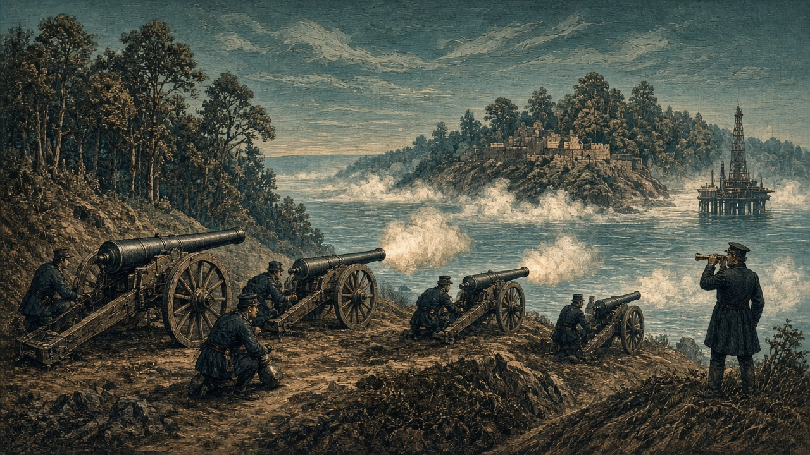

オリョルッルと黄砂同盟が開戦
アカピ大陸東岸で砲兵4隊が集中砲撃
海底油田の目前で初戦、歩兵と海兵も激突 藍岬はオラニウムへ宣戦、なのですは同盟軍へ申請

【総合部】予告されていたオリョルッル王国と黄砂同盟の戦争が第145期に始まった。アカピ大陸東岸の前線では、オリョルッル王国の砲兵4隊が黄砂同盟の第3方面軍歩兵（26,28）へ4度にわたり砲撃を加え、黄砂の歩兵も南隣の浅瀬に展開したオリョルッルの第2軍海兵（26,29）へ切り込んだ。初戦の公式戦果はオリョルッル900人、黄砂1,000人（反撃のない砲撃分は公式戦果表に含まれない）。交戦地点の南、浅瀬（27,29）（26,30）には黄砂の海底油田2か所が並ぶ。陸の歩兵陣地だけでなく、沖の資源拠点を守り切れるかが戦局を左右する。戦況の詳報は2面。
外交と安全保障も大きく動いた。ノルステア大陸の藍岬共和国連邦は今期、朱川共和国と交戦中のオラニウム連邦へ宣戦布告した（第150期開戦予定）。一方、前号の「丹城事件」で首都人口の9割超を失った朱川共和国はオラニウム連邦へ停戦の意思を打診し、白波王国もチェス＝シロバキア共和国へ停戦を打診した。さらに、なのです主義人民共和国が軍事陣営「同盟軍」（盟主・青海共和国、黒潮自治国が所属）への加入を申請した（承認期限は第157期）。詳報は3面。
アルガリスト軍、3部隊全滅で8,600人に
遷都直後の新首都にも泰平軍
泰平の空兵・装甲Ａ・砲兵が包囲攻撃 今期戦果は泰平5,100人・帝国400人
【軍事部】セントラ大陸東部のアルガリスト戦線では、泰平天国の第28軍空兵、第18軍装甲Ａ、第20軍砲兵がアルガリスト帝国の歩兵2隊と山岳兵1隊を相次いで攻撃し、帝国側の3部隊が全滅した。今期の戦果は泰平5,100人、帝国400人（累計は泰平91,100人、帝国24,600人）。帝国の兵力は第143期の16,400人から2期で8,600人へほぼ半減。前期に遷都したばかりの新首都アルガリスト（49,39）にも泰平軍の山岳兵が踏み込み、地形抵抗力は10から2に低下した。新都防衛の危機は深まっている。詳報は2面。
星書宰相「最後の炭坑と港が動く限り旗は降ろさない」
相次ぐ部隊の全滅を受け、星書廉宰相は新都の仮庁舎で残存部隊の指揮官と炭坑の代表を集めた。「三つの軍団を失い、新都の石垣にも敵兵が取りついた。それでもヴァルセナの街と南の港、東の炭坑が動く限り、帝国の旗は降ろさない」と星書。帝国は今期も北方の森（48,38）へ新たな部隊を送り出し、南端の中立地（49,44）を整地して後方の足場を確保した。
怪獣クジラ、2都市壊滅 市民22,800人死亡
【社会部】ソルエクア大陸西岸のオリョルッル王国の都市（11,41）と、アウストレア大陸西岸のなのです主義人民共和国の都市（14,70）が、それぞれ怪獣クジラに踏み荒らされ、住民計22,800人が死亡した。
火災も4か国で53,700人死亡 なのですの工場焼失
4か国12か所で火災が起き、合わせて53,700人が死亡。なのですでは工場1か所も失われた。二つの惨事の詳報は4面。